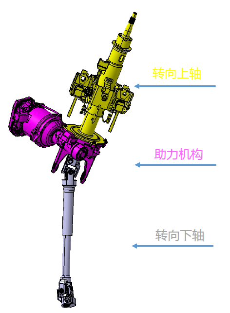
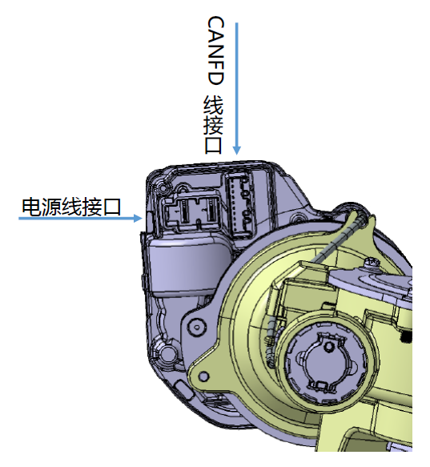

功能
在车辆驾驶过程中，为驾驶员转向提供助力；使得车辆在低速转向轻便、高速转向沉稳，提升驾驶舒适性和操纵稳定性。
工作原理
通过扭矩传感器、转角传感器识别当前驾驶员转动方向盘力矩大小以及当前车辆方向盘转角，并结合整车车速信号，计算并输出助力。
产品结构
单体结构

接口定义

产品故障及排查
机械故障排查：在进行产品单件排查前，应首先进行各安装点扭力检查，确认无问题再进行产品单体排查；建议ABA进行互换验证。
电气故障排查：在进行产品单件排查前，应首先进行线束连接相关检查，确认无问题再进行产品单体排查；用诊断仪连接EPS进入诊断系统读取故障代码，并根据故障代码进行诊断排查。